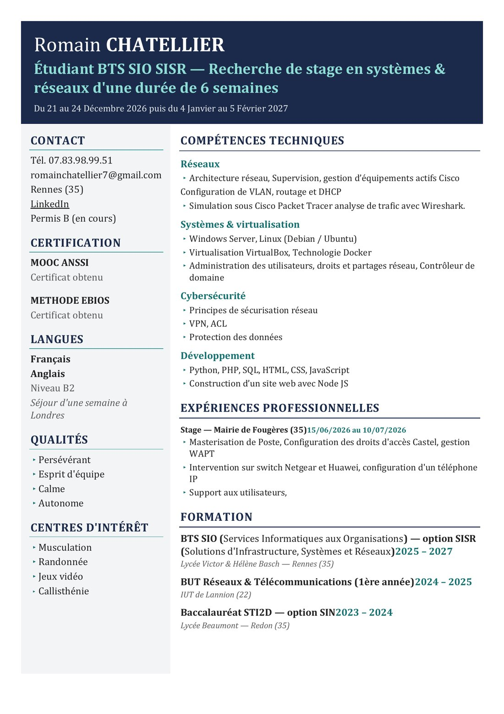
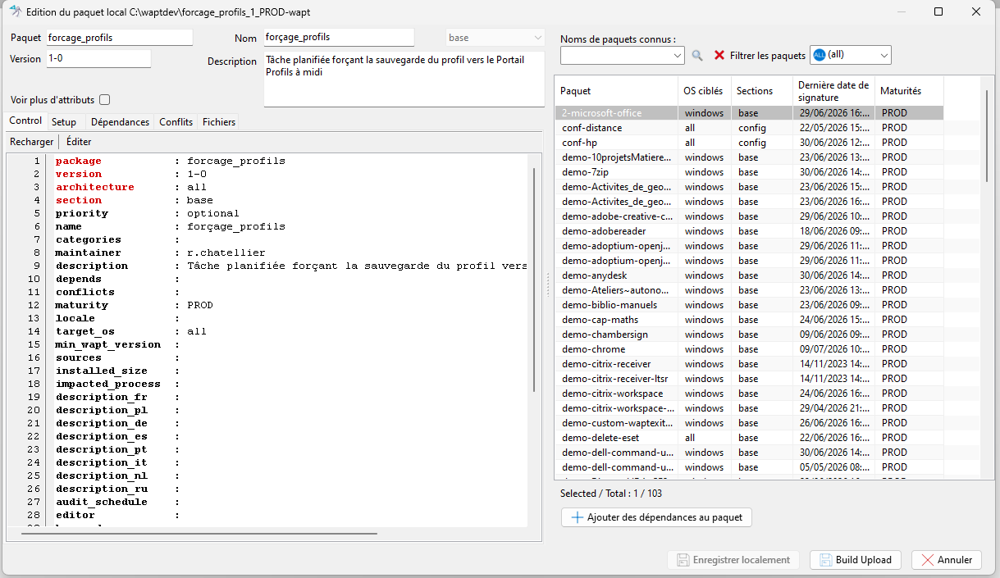
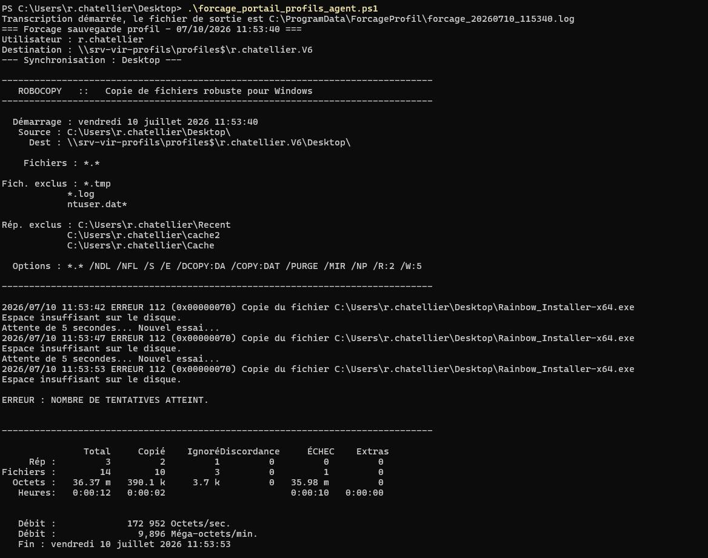
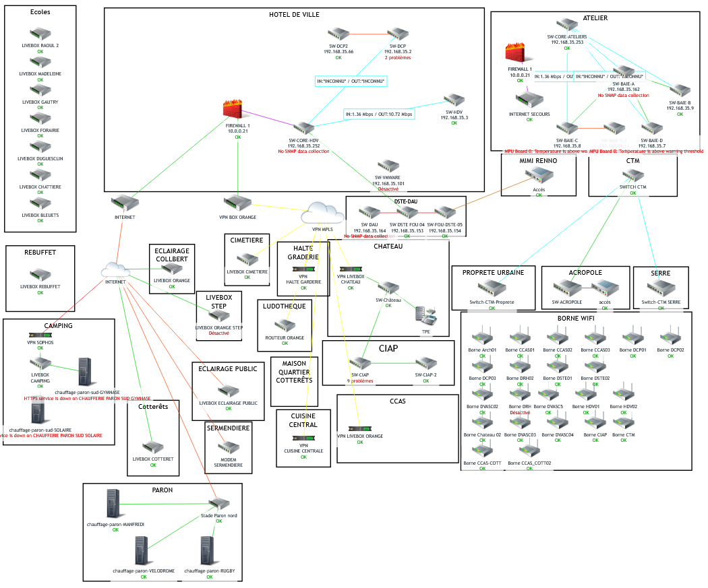

Bienvenue dans
mon portfolio
Romain Chatellier
BTS SIO — option SISR
CV

Stage 1
Mission 1 : Déploiement des postes et gestion du contrôle d'accès
- Compte rendu de mission 1
- Documentation FOG
-
Paquet WAPT — forçage de sauvegarde du profil

-
Résultat du script de sauvegarde (PowerShell)

Mission 2 : Support et assistance aux utilisateurs
Mission 3 : Administration et exploitation de l'infrastructure réseau
- Compte rendu de mission 3
-
Supervision réseau (Zabbix)

Stage 2
Mission 1 : Gestion et maintenance de l'infrastructure de la mairie de Fougères
Mission 2
Mission 3
Mission 4
AP 1
AP formation
GSB semestre 2
AP 2
Aucune AP de deuxième année pour le moment.
Tableau de synthèse E5
Fichier Excel : aperçu direct impossible sans JavaScript, le lien télécharge le fichier.